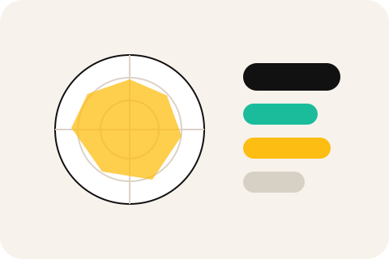

Wat hier straks komt
Een heldere uitleg van mijn profiel, inclusief sterke punten, valkuilen, voorkeuren in samenwerking en hoe dat zichtbaar is in mijn werk.
Persoonlijk profiel
Deze pagina wordt later aangevuld met mijn DISC-profiel en vooral met de praktische vertaling ervan naar samenwerking, leiderschap, communicatie en besluitvorming.

Een heldere uitleg van mijn profiel, inclusief sterke punten, valkuilen, voorkeuren in samenwerking en hoe dat zichtbaar is in mijn werk.
Voor opdrachtgevers en teams zegt een gedragsprofiel pas echt iets als je het koppelt aan verantwoordelijkheid, communicatie en dagelijkse praktijk.
Contact via info@harmenvandermeijden.nl of LinkedIn.